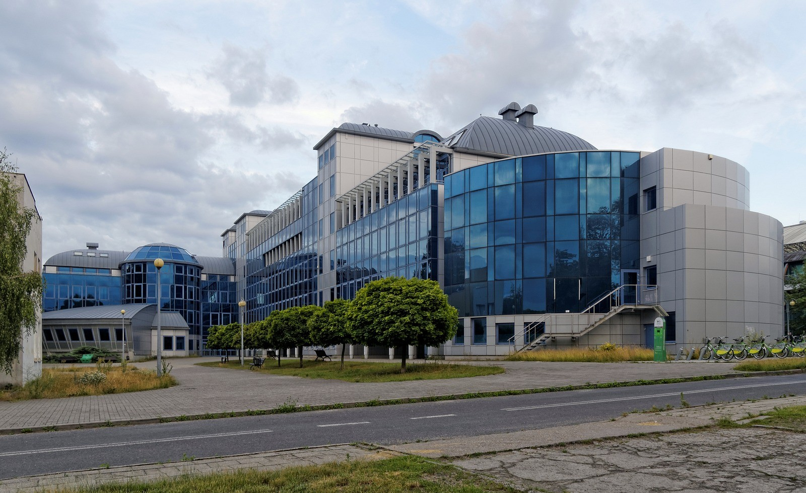

Przekraczając granice pojedynczych dyscyplin.
Uczelniana konferencja studencka organizowana przez Koło Naukowe Quanta. Zderzamy perspektywy prawa, sztucznej inteligencji, kognitywistyki, ekonomii i biotechnologii.
Pytania, które zainspirowały nasze plakaty promocyjne:
O konferencji Beyond Fields.
Beyond Fields to ogólnouczelniana inicjatywa naukowa organizowana przez Koło Naukowe Fizyki „Quanta”, działające na Uniwersytecie Zielonogórskim. Jej celem jest stworzenie dynamicznej przestrzeni do wymiany wiedzy, prezentacji wyników badań oraz inspirującej dyskusji nad współczesnymi wyzwaniami i problemami nauki.
Konferencja integruje środowisko akademickie – od studentów i młodych badaczy po doświadczonych naukowców – wspierając współpracę międzysektorową i interdyscyplinarne podejście do nauki. To także okazja do zadawania pytań, przekraczania barier między dyscyplinami i rozwijania pomysłów, z których mogą powstać nowe inicjatywy badawcze.
Dlaczego warto wziąć udział?
Przekraczanie granic dyscyplin
Łączymy fizykę z innymi dziedzinami nauki, tworząc grunt pod nowe pomysły, przełomowe koncepcje i międzyobszarowe inicjatywy badawcze.
Networking i współpraca
Idealna okazja do nawiązania kontaktów naukowych, wymiany doświadczeń między kołami oraz dołączenia do interdyscyplinarnych zespołów projektowych.
Rozwój naukowy i feedback
Otrzymasz cenny feedback od specjalistów z różnych dziedzin, udoskonalisz swój warsztat prezentacyjny i wspólnie poszukamy odpowiedzi na nurtujące pytania.
Program i przebieg wydarzenia
Wydarzenie kładzie nacisk na konfrontowanie różnych perspektyw i poszukiwanie nowych kierunków badawczych. W programie konferencji znajdują się:
Wystąpienia prelegentów
Prezentacje autorskich badań, projektów naukowych i koncepcji przygotowanych przez studentów oraz doktorantów.
Dyskusje panelowe
Otwarte panele dyskusyjne – okazja do zadawania pytań, polemiki i bezpośredniej wymiany spostrzeżeń z ekspertami.
Sesja posterowa
Strefa prezentacji prac badawczych w formie plakatów naukowych na korytarzu 1. piętra oraz swobodnych rozmów kuluarowych.
Stanowiska kół naukowych
Możliwość zaprezentowania profilu koła naukowego, demonstracji aparatury, projektów inżynierskich i dotychczasowych osiągnięć.
Pytania, które zdefiniowały Beyond fields.
Plakaty przygotowane przez Koło Naukowe Quanta poruszają kluczowe dylematy ze styku nauk ścisłych, społecznych i humanistycznych. Główny plakat stawia fundamentalne pytanie o zasadność granic, jakimi podzieliliśmy naszą wiedzę o świecie.

„A co, jeśli świat nie jest podzielony tak, jak podzieliliśmy go my?”
Główny motyw przewodni konferencji Beyond fields. Granice między dziedzinami wiedzy to wytwór człowieka — realne wyzwania współczesnego świata wymykają się tradycyjnym podziałom akademickim.
Galeria wszystkich plakatów (13)
Harmonogram konferencji.
Bloki referatowe, pokazy stanowisk kół naukowych oraz networking, od porannej rejestracji o 08:30 do zakończenia VI bloku o 17:30.
Uwaga: Harmonogram może ulec zmianie w zależności od ilości referatów.
Lokalizacja konferencji.
Konferencja odbywa się na Kampusie A Uniwersytetu Zielonogórskiego. Wszystkie wykłady, stanowiska kół naukowych oraz prezentacje posterów zlokalizowane są na 1. piętrze budynku A-29.

Budynek A-29
ul. prof. Zygmunta Szafrana 4a, Zielona Góra
Dane przestrzeni konferencyjnej
Postery naukowe będą prezentowane bezpośrednio na korytarzu 1. piętra wraz ze stanowiskami kół naukowych, tworząc otwartą przestrzeń dyskusji i networkingu.
Zapisz się na Beyond fields 2026.
Termin nadsyłania zgłoszeń: do 10 listopada 2026 r. Wybierz odpowiedni formularz poniżej, aby zgłosić swój udział indywidualny lub zarejestrować reprezentowane koło naukowe. Wstęp jest w 100% bezpłatny.
Uczestnik konferencji
Zgłoszenie udziału w wykładach i panelach w sali 106 (Budynek A-29, Kampus A UZ).
Materiały pokonferencyjne.
Po zakończeniu wydarzenia na tej stronie opublikujemy pełną dokumentację i materiały związane z konferencją Beyond fields.
Galeria zdjęć
Fotorelacja z przebiegu konferencji: wykładów w sali 106 oraz stoisk kół naukowych na korytarzu.
Książka abstraktów
Elektroniczne wydanie oficjalnej książki abstraktów, zawierającej streszczenia nadesłanych prac, referatów i projektów.
Sprawozdanie & Podziękowania
Oficjalne sprawozdanie Koła Naukowego Quanta, podziękowania dla prelegentów, kół naukowych i uczestników oraz podsumowanie przebiegu konferencji.
Wszyscy zarejestrowani uczestnicy otrzymają również bezpośrednie powiadomienie mailowe w momencie udostępnienia galerii oraz książki abstraktów.
Masz pytania do organizatorów?
Skontaktuj się bezpośrednio z komitetem organizacyjnym konferencji ze strony Koła Naukowego Quanta.
Pytania dotyczące programu konferencji, certyfikatów uczestnictwa, współpracy i stoisk kół naukowych, zgłoszeń referatów oraz kwestii organizacyjnych.